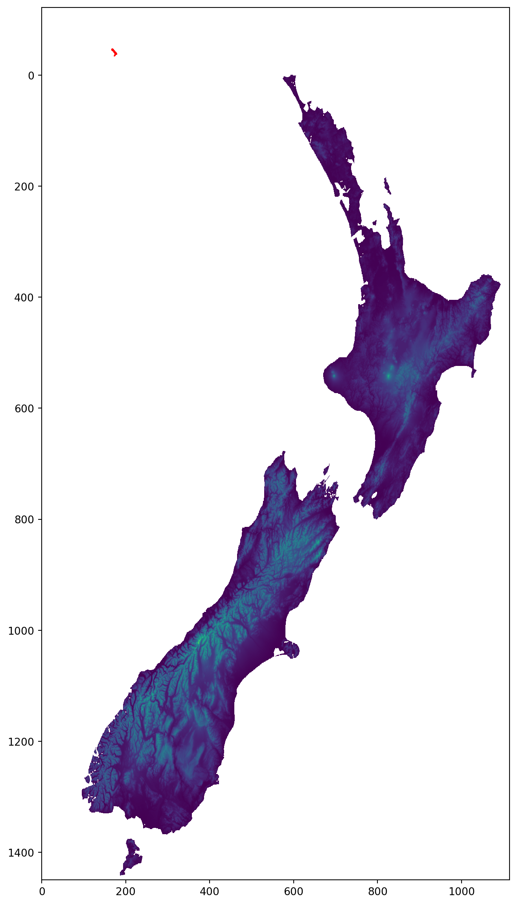
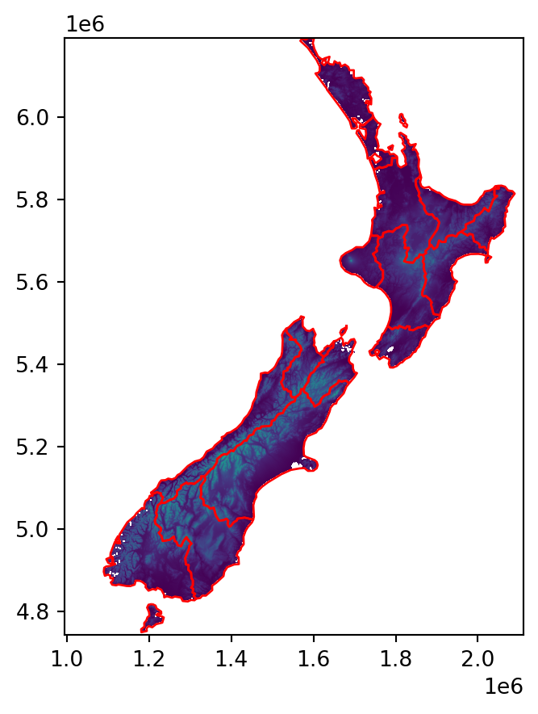

import matplotlib as mpl
import matplotlib.pyplot as plt
import geopandas as gpd
import rasterio
import rasterio.plot8 Making maps with Python
8.1 Prerequisites
This chapter requires the following packages:
Sample data…
nz = gpd.read_file('data/nz.gpkg')
nz_elev = rasterio.open('data/nz_elev.tif')8.2 Introduction
A satisfying and important aspect of geographic research is communicating the results. Map making—the art of cartography—is an ancient skill that involves communication, intuition, and an element of creativity. In addition to being fun and creative, cartography also has important practical applications. A carefully crafted map can be the best way of communicating the results of your work, but poorly designed maps can leave a bad impression. Common design issues include poor placement, size and readability of text and careless selection of colors, as outlined in the style guide of the Journal of Maps. Furthermore, poor map making can hinder the communication of results (Brewer 2015, add citation…):
Amateur-looking maps can undermine your audience’s ability to understand important information and weaken the presentation of a professional data investigation. Maps have been used for several thousand years for a wide variety of purposes. Historic examples include maps of buildings and land ownership in the Old Babylonian dynasty more than 3000 years ago and Ptolemy’s world map in his masterpiece Geography nearly 2000 years ago (Talbert 2014, add citation…).
Map making has historically been an activity undertaken only by, or on behalf of, the elite. This has changed with the emergence of open source mapping software such as mapping packages in Python, R, and other languages, and the “print composer” in QGIS which enable anyone to make high-quality maps, enabling “citizen science”. Maps are also often the best way to present the findings of geocomputational research in a way that is accessible. Map making is therefore a critical part of geocomputation and its emphasis not only on describing, but also changing the world.
Basic static display of vector layers in Python is done with the .plot method or the rasterio.plot.show function, for vector layers and rasters, as we saw in Sections Section 1.2.2 and Section 1.3.2, respectively. Other, more advaned uses of these methods, were also encountered in later chapters, when demonstrating the various outputs we got. In this chapter, we provide a comprehensive summary of the most useful workflows of these two methods for creating static maps (Section 8.3). Then, we move on to elaborate on the .explore method for creating interactive maps, which was also briefly introduced earlier (Section 1.2.2).
8.3 Static maps
Static maps are the most common type of visual output from geocomputation. Standard formats include .png and .pdf for raster and vector outputs, respectively. Static maps can be easily shared and viewed (whether digitally or in print), however they can only convey as much information as a static image can. Interactive maps provide much more flexibilty in terms of user experience and amout of information, however they often require more work to design and effectively share.
Let’s move on to the basics of static mapping with Python.
A vector layer (GeoDataFrame) or a geometry column (GeoSeries) can be displayed using their .plot method. Most common visual properties include color, edgecolor, and markersize (for points) (Figure 8.1):
nz.plot(color='grey');
nz.plot(color='none', edgecolor='blue');
nz.plot(color='grey', edgecolor='blue');


color and edgecolor in static maps of a vector layerAs shown in Section 1.3.2, you can plot raster datasets using rasterio.plot.show, as follows:
rasterio.plot.show(nz_elev);
You can combine the raster and vector plotting methods shown above into a single visualisation with multiple layers, which we used to explain masking and cropping (Figure 5.1):
fig, ax = plt.subplots(figsize=(5, 5))
rasterio.plot.show(nz_elev, ax=ax)
nz.to_crs(nz_elev.crs).plot(ax=ax, facecolor='none', edgecolor='r');
8.3.1 Palettes
…
8.3.2 Layers
…
8.3.3 Faceted maps
…
8.3.4 Exporting maps as images
…
8.4 Interactive maps
- When are interactive maps useful
An interactive map is an important way to understand and interpret complex geographical information. A good interactive map enables movement across the map area, change the area of interest and provide additional context or text information. In this section we will look an interactive map based of national public transport access nodes (NaPTAN), the UK Department for Transport repository of public transport point-of-interest in England, Scotland and Wales consisting of: - bus stops and railway stations - tram, metro and underground stops - airports and ferry terminals
We will show how to create this may restricted to railway stations, tram stops and ferry terminals in Yorkshire. This will also match data to the National Rail customer reservation code (CRS) and timing point location (TIPLOC) attributes used in the the national rail timetable.
In the first code block we define a function get_databuffer that uses the requests library to download the NaPTAN data-set in CSV format to a StringIO buffer.
import io
import requests
def get_databuffer(uri, encoding='UTF-8'):
"""Download data from URI and returns as an StringIO buffer"""
r = requests.get(uri, timeout=10)
return io.StringIO(str(r.content, encoding))
# NaPTAN data service
URI='https://multiple-la-generator-dot-dft-add-naptan-prod.ew.r.appspot.com/v1/access-nodes?dataFormat=csv'
BUFFER = get_databuffer(URI)We then read the in-memory string-buffer into a Panda data-frame, treating the buffer as if it were a CSV file. We then extract the location data into a numpy two-dimensional array.
import pandas as pd
DF1 = pd.read_csv(BUFFER, low_memory=False)
DATA = DF1[['Longitude', 'Latitude']].valuesWe then convert the \(transposed data-array\) into a GeoSeries and use this to create a GeoDataFrame. Which we then tidy by dropping any columns that only contain invalid (pd.NA) values.
import geopandas as gpd
POINTS = gpd.points_from_xy(*DATA.T, crs='WGS84')
NaPTAN = gpd.GeoDataFrame(data=DF1, geometry=POINTS)
NaPTAN = NaPTAN.dropna(how='all', axis=1)The next step is to create the timing-point TIPLOC data based on the StopType and a subset of the ATCOCode columns.
NaPTAN['TIPLOC'] = ''
# Heavy railway stations
IDX1 = NaPTAN['StopType'] == 'RLY'
NaPTAN.loc[IDX1, 'TIPLOC'] = NaPTAN['ATCOCode'].str[4:]
# Ferrys
IDX1 = NaPTAN['StopType'] == 'FER'
NaPTAN.loc[IDX1, 'TIPLOC'] = NaPTAN['ATCOCode'].str[4:]
# Metro and trams
IDX1 = NaPTAN['StopType'] == 'MET'
NaPTAN.loc[IDX1, 'TIPLOC'] = NaPTAN['ATCOCode'].str[6:]We extract the heavy and light rail, or ferry locationsFrom the 435,298 rows in the NaPTAN data-frame.
IDX1 = NaPTAN['StopType'].isin(['RLY', 'FER', 'MET'])
STATIONS = NaPTAN[IDX1]Filter columns and drop points within Yorkshire.
FIELDS = ['ATCOCode', 'CommonName', 'ShortCommonName', 'LocalityName',
'StopType', 'Status', 'TIPLOC', 'geometry']
# Clean up data-frame columns
STATIONS = STATIONS[FIELDS]
YORKSHIRE = gpd.read_file('data/yorkshire.json').iloc[0, 0]
IDX = STATIONS.within(YORKSHIRE)
STATIONS = STATIONS[IDX]
# Write to GeoJSON
STATIONS.to_file('stations.geojson', driver='GeoJSON')
# Write file to GeoPackage
OUTPUT = STATIONS.copy()
CRS = 'EPSG:32630'
OUTPUT['geometry'] = OUTPUT['geometry'].to_crs(CRS)
OUTPUT.to_file('stations.gpkg', driver='GPKG', layer='stations')- Holoviews: facetted plotting
- Panel: allows you to create applications/dashboards
8.4.1 GeoPandas explore
…
8.4.2 Layers
…
8.4.3 Publishing interactive maps
…
8.4.4 Linking geographic and non-geographic visualisations
…